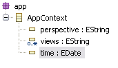

An application that integrates OCL may find it advantageous to provide its users with an enhanced OCL environment, to simplify their task of formulating OCL constraints and queries. For example, an application might define additional "primitive" operations on the OCL standard data types that are pertinent to its domain, or "global" variables that inject useful objects into the user's context. It is also possible to customize the way "hidden" opposites are looked up and navigated, specifically to allow reverse navigation across Ecore references that have no opposite defined.
Consider an application that allows end-users to specify conditions, using OCL, to filter the objects that are shown in the user interface. Given a sufficiently rich model (expressed in Ecore or UML) of the objects that the UI presents, many conditions can be expressed entirely in terms of this model. However, some queries might depend on state of the application, itself, not the data: which perspective is active, whether some view is showing, or even the time of day. These are not characteristics of the objects that the user wishes to filter.
Such an application might, then, choose to define application-specific variables that a filter condition can query: app$perspective, app$views, app$time. Or, perhaps a single variable app$, that has properties that a condition can access:
-- filter out OCL files in the Web Development perspective self.extension = 'ocl' and app$.perspective = 'Web Development'
To do this, we define a small Ecore model of our application context, e.g.:

Then, in the code that parses a user's filter condition:
OCL<?, EClassifier, ?, ?, ?, ?, ?, ?, ?, Constraint, EClass, EObject> ocl;
ocl = OCL.newInstance(EcoreEnvironmentFactory.INSTANCE);
OCLHelper<EClassifier, ?, ?, Constraint> helper = ocl.createOCLHelper();
helper.setContext(MyPackage.Literals.FILE);
// create a variable declaring our global application context object
Variable<EClassifier, EParameter> appContextVar =
ExpressionsFactory.eINSTANCE.createVariable();
appContextVar.setName("app$");
appContextVar.setType(AppPackage.Literals.APP_CONTEXT);
// add it to the global OCL environment
ocl.getEnvironment().addElement(appContextVar.getName(), appContextVar, true);
List<Constraint> conditions = new ArrayList<Constraint>();
// parse the user's filter conditions
for (String cond : getFilterConditions()) {
conditions.add(helper.createInvariant(cond));
}
// apply the filters
applyFilters(conditions);
The body of our hypothetical applyFilters() method must bind this context variable to a value. In this case, the value can be computed when we apply the filters:
AppContext appContext = AppFactory.eINSTANCE.createAppContext();
// hypothetical workbench utilities
appContext.setPerspective(WorkbenchUtil.getCurrentPerspective());
appContext.getViews().addAll(WorkbenchUtil.getOpenViewIDs());
appContext.setTime(new Date());
List<Query<EClassifier, EClass, EObject>> queries =
new ArrayListlt;Query<EClassifier, EClass, EObject>>(constraints.size());
for (Constraint next : constraints) {
Query<EClassifier, EClass, EObject> query = ocl.createQuery(next);
// bind the variable value
query.getEvaluationEnvironment().add("app$", appContext());
queries.add(query);
}
filter(queries); // applies these filters to the current objects by evaluating
// the OCLS on them.
OCL allows the definition of additional operations and attributes using def: expressions. This is very convenient for the formulation of constraints, but what if the operation that we need is something like a regex pattern match?
class Person
inv valid_ssn: self.ssn.regexMatch('\d{3}-\d{3}-\d{3}') <> null
We might try to define this using OCL, as an additional operation on the OCL Standard Library's String primitive type:
class String
def: regexMatch(pattern : String) : String =
-- ???
The operations available in the OCL Standard Library simply are not sufficient to express the value of this operation, which should return the substring matching a regex pattern or null if the pattern does not match. We need to implement this operation in Java. We can do that by creating a custom Environment that knows how to look up this operation, and an EvaluationEnvironment that knows how it is implemented.
First, let's start by defining a specialization of the EcoreEnvironment. The constructor that is used to initialize the root environment of an OCL instance will add our regexMatch additional operation to the String primitive type. The constructor that is used to create nested environments copies the operation from its parent.
class MyEnvironment extends EcoreEnvironment {
EOperation regexMatch;
// this constructor is used to initialize the root environment
MyEnvironment(EPackage.Registry registry) {
super(registry);
defineCustomOperations();
}
// this constructor is used to initialize child environments
MyEnvironment(MyEnvironment parent) {
super(parent);
// get the parent's custom operations
regexMatch = parent.regexMatch;
}
// override this to provide visibility of the inherited protected method
@Override
protected void setFactory(
EnvironmentFactory<EPackage, EClassifier, EOperation, EStructuralFeature, EEnumLiteral, EParameter, EObject, CallOperationAction, SendSignalAction, Constraint, EClass, EObject> factory) {
super.setFactory(factory);
}
// use the AbstractEnvironment's mechanism for defining "additional operations"
// to add our custom operation to OCL's String primitive type
private void defineCustomOperations() {
// pattern-matching operation
regexMatch = EcoreFactory.eINSTANCE.createEOperation();
regexMatch.setName("regexMatch");
regexMatch.setEType(getOCLStandardLibrary().getString());
EParameter parm = EcoreFactory.eINSTANCE.createEParameter();
parm.setName("pattern");
parm.setEType(getOCLStandardLibrary().getString());
regexMatch.getEParameters().add(parm);
// annotate it so that we will recognize it in the evaluation environment
EAnnotation annotation = EcoreFactory.eINSTANCE.createEAnnotation();
annotation.setSource("MyEnvironment");
regexMatch.getEAnnotations().add(annotation);
// define it as an additional operation on OCL String
addOperation(getOCLStandardLibrary().getString(), regexMatch);
}
}
Next, we will define the corresponding specialization of the EcoreEvaluationEnvironment that will know how to evaluate calls to this custom operation:
class MyEvaluationEnvironment extends EcoreEvaluationEnvironment {
MyEvaluationEnvironment() {
super();
}
MyEvaluationEnvironment(
EvaluationEnvironment<EClassifier, EOperation, EStructuralFeature, EClass, EObject> parent) {
super(parent);
}
public Object callOperation(EOperation operation, int opcode, Object source, Object[] args) {
if (operation.getEAnnotation("MyEnvironment") == null) {
// not our custom regex operation
return super.callOperation(operation, opcode, source, args);
}
if ("regexMatch".equals(operation.getName())) {
Pattern pattern = Pattern.compile((String) args[0]);
Matcher matcher = pattern.matcher((String) source);
return matcher.matches()? matcher.group() : null;
}
throw new UnsupportedOperationException(); // unknown operation
}
}
Finally, we define a specialization of the EcoreEnvironmentFactory that creates our custom environments:
class MyEnvironmentFactory extends EcoreEnvironmentFactory {
public Environment<EPackage, EClassifier, EOperation, EStructuralFeature, EEnumLiteral, EParameter, EObject, CallOperationAction, SendSignalAction, Constraint, EClass, EObject>
createEnvironment() {
MyEnvironment result = new MyEnvironment(getEPackageRegistry());
result.setFactory(this);
return result;
}
public Environment<EPackage, EClassifier, EOperation, EStructuralFeature, EEnumLiteral, EParameter, EObject, CallOperationAction, SendSignalAction, Constraint, EClass, EObject>
createEnvironment(Environment<EPackage, EClassifier, EOperation, EStructuralFeature, EEnumLiteral, EParameter, EObject, CallOperationAction, SendSignalAction, Constraint, EClass, EObject> parent) {
if (!(parent instanceof MyEnvironment)) {
throw new IllegalArgumentException(
"Parent environment must be my environment: " + parent);
}
MyEnvironment result = new MyEnvironment((MyEnvironment) parent);
result.setFactory(this);
return result;
}
public EvaluationEnvironment<EClassifier, EOperation, EStructuralFeature, EClass, EObject>
createEvaluationEnvironment() {
return new MyEvaluationEnvironment();
}
public EvaluationEnvironment<EClassifier, EOperation, EStructuralFeature, EClass, EObject>
createEvaluationEnvironment(
EvaluationEnvironment<EClassifier, EOperation, EStructuralFeature, EClass, EObject> parent) {
return new MyEvaluationEnvironment(parent);
}
}
Now, we can use our environment to parse the kind of expression that we were looking for:
OCL<?, EClassifier, ?, ?, ?, ?, ?, ?, ?, Constraint, EClass, EObject> ocl;
ocl = OCL.newInstance(new MyEnvironmentFactory());
OCLHelper<EClassifier, ?, ?, Constraint> helper = ocl.createOCLHelper();
helper.setContext(MyPackage.Literals.PERSON);
// double the '\' to escape it in a Java string literal
Constraint validSSN = helper.createInvariant(
"self.ssn.regexMatch('\\d{3}-\\d{3}-\\d{3}') <> null");
Person person = getPersonToValidate();
System.out.printf("%s valid SSN: %b%n", person, ocl.check(person, validSSN));
The default EcoreEnvironmentFactory produces environments which can find references that have an annotation with source http://schema.omg.org/spec/MOF/2.0/emof.xml that have a detail with key Property.oppositeRoleName. In the class that is the type of the reference, and all its subclasses, for OCL this annotation defines an otherwise "hidden" opposite property which can be used in OCL expressions. This can be convenient when it is not possible or desirable to define an explicit opposite reference, e.g., because the class that would have to own the opposite reference can't easily be modified or the serialization of that class must not be changed.
The logic used to find these "hidden" opposites and to navigate them is provided by implementations of the OppositeEndFinder interface. By default, the EcoreEnvironmentFactory uses the DefaultOppositeEndFinder implementation. It performs the lookup of annotated references by maintaining a cache based on the Ecore package registry. Successful navigation of those "hidden" opposites requires an ECrossReferenceAdapter to be registered for the containment hierarchy or the resource or resource set that should be used as the scope of the navigation.
Obviously, ECrossReferenceAdapter has a significant downside: it responds to "hidden" opposite navigation requests only based on what has so far been loaded by EMF. If the set of resources held by an underlying EMF storage system contains more resources than have so far been loaded into the resource set, non-loaded content from that storage system won't be considered by the ECrossReferenceAdapter. Given a store with reasonable search capabilities it is desirable to take advantage of these capabilities also to perform reverse navigation of those "hidden" opposites. To achieve this, a specific implementation of the OppositeEndFinder interface can be provided. It may be a specialization of DefaultOppositeEndFinder, e.g., when the reference lookup based on the Ecore package registry is sufficient and only the navigation behavior shall be redefined:
class MyOppositeEndFinder extends DefaultOppositeEndFinder {
MyOppositeEndFinder(EPackage.Registry registry) {
super(registry);
}
@Override
public Object navigateOppositeProperty(EStructuralFeature property, Object target) {
Collection
With this, OCL can be instantiated using the custom opposite end finder as follows:
OCL ocl = OCL.newInstance(new MyOppositeEndFinder()); ...With this, when the use of a property in an OCL expression cannot be resolved to an attribute or reference, the opposite end finder is asked to look for a correspondingly-named "hidden" opposite. Navigation across this "hidden" opposite will then call the navigateOppositeProperty method on MyOppositeEndFinder.
Copyright (c) 2000, 2007 IBM Corporation and others. All Rights Reserved.